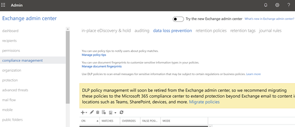
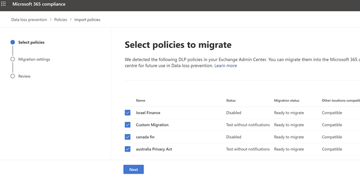
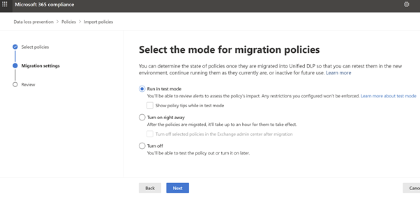
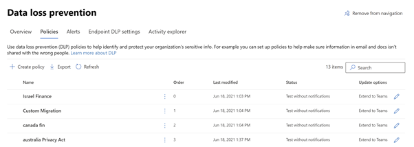
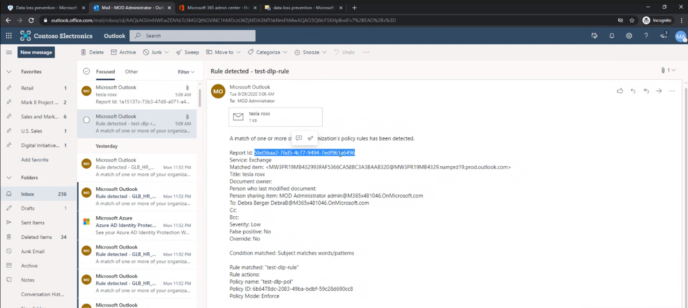
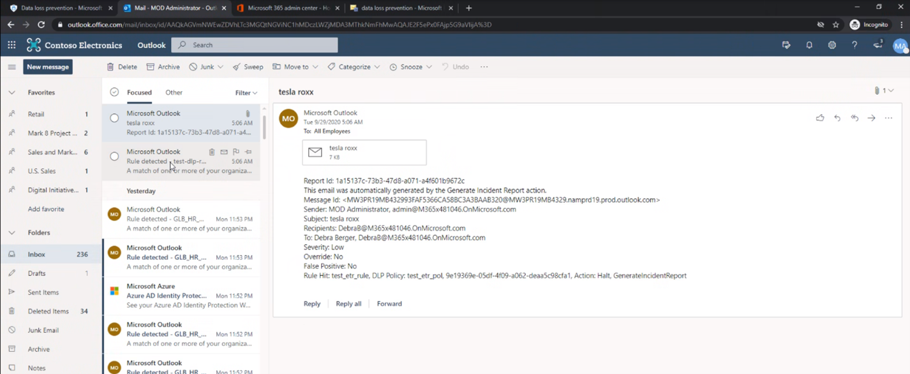
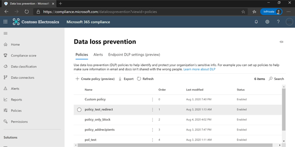

Please use this guide as a starting point for migrating Exchange Transport Rules (EAC-DLP) to Microsoft 365 DLP (Microsoft Compliance Center). All links and references should be up to date, however, in the event that you have a question about the correctness of any information in this document, please reach out to our yammer group aka.ms/askmipteam
For a refresher on the knowledge and differences between Exchange Transport Rules (EAC-DLP) and Microsoft Information Protection –DLP (MIP-DLP) when applied to the Exchange workload, please review the overview section of this documentation prior to moving forward.
All screenshots in this guide contain the proper configuration settings according to best practices at the time of publication. Please ensure that your configurations mirror those used in this guide. Please refer to the Microsoft documentation online at https://docs.microsoft.com/en-us/microsoft-365/compliance/?view=o365-worldwide for the latest updates.
Though the name of this document shows as play book, it can be equally considered as a deployment guide. This document will be updated as and when new features are introduced to the Migration Wizard. Also please note that, not all below stages needs to be implemented. It all depends on the requirement of the organization and the availability of licenses.
There are 2 stages/tracks exists in any of the MIP/DLP deployment
Stage 1: Migration from ETR (EAC-DLP) to Microsoft 365 DLP (EXO)
Stage 2: Integration with other workloads (SPO/ODB/MCAS/Devices) (Out of scope of this document). Refer this blog for more details
This document provides an overview of how enterprise customers can migrate their existing Exchange Transport Rules (DLP) to Microsoft compliance portal – DLP(EXO). It walks through the different stages of migration and shows the effectiveness of the DLP portal as a single place to define all aspects of your DLP strategy.
This document helps readers understand the process to be followed during the migration of traditional exchange transport rules from Exchange Admin Centre (EAC) portal – DLP section to Microsoft Compliance Center- DLP portal, followed by the addition of other workloads based on the organizational need. Microsoft Compliance portal has integration with multiple workloads that help to protect customer data with a single policy.
This document helps in understanding the process to be followed in migrating existing traditional ETR rules in Exchange Center Portal (DLP) to Microsoft 365 DLP using the in-service - DLP policy Migration Wizard.
Customer is currently using ETR (EAC-DLP) policies for data protection on Exchange.
All the Data Classification needs (Sensitive Information Types) has been Identified.
Prior to Microsoft 365 DLP, most organizations protected data using the rules created in Exchange. You can use mail flow rules (also known as transport rules) to identify and act on messages that flow through the Exchange Online organization. Mail flow rules are like the Inbox rules available in Outlook and Outlook on the web. Mail flow rules contain a richer set of conditions, exceptions, and actions, which provide you with the flexibility to implement many types of messaging policies. Please note that, Exchange Transport Rules are not deprecating, and they remain same. Only, the ETR’s linked to Exchange DLP policy (refer below URL or Figure-1) are being migrated (recommended) to Microsoft 365 DLP portal.
The rules that are in the highlighted portion of the below picture are the rules, needs to be migrated to the Microsoft 365 DLP portal using the Wizard. Other Rules remains in the portal and is not part of this migration.

Figure 1: Exchange Admin Center
On click of the yellow ribbon, you will be taken to the compliance Portal for further actions. The compliance Portal overview has been given in the next section.
Microsoft Compliance Centre has many Compliance Products, and this document helps in understanding one of the product/platforms, i.e., Microsoft Information Protection (MIP) at a high level. It has 3 components. 1 – Data Classification 2-Data Loss Prevention 3-Information Protection. Current documents talk more about, Data Loss Prevention (DLP)
Microsoft Information Protection (MIP) helps to identify, discover, classify, protect, and prevent sensitive information wherever it lives either at rest or in transit.
Figure 2: Microsoft Information Protection Cycle
Know your data assists in understanding the current data landscape and provides organizations with the ability to identify sensitive content residing in Microsoft 365, across Exchange, SPO, ODB and physical devices depending on workloads used and licensing owned.
Protect your data assists in applying flexible protection that includes visual marking, encryption and access restrictions across apps, services and devices that travel inside and outside the organization.
Prevent data loss (DLP) assists in preventing the accidental data loss and oversharing of sensitive information with-in or outside the organization. In the Data Loss Prevention capability of MIP, Global and Compliance admins can create policies across workloads and applies rules to protect data oversharing. Pre-defined built in regulatory templates across various industries are available. Administrators can create their own custom policies to suit organizational needs.
Once the data is classified based on the organizational needs, start creating the policies/rules to prevent the data loss using the URL: https://compliance.microsoft.com/datalossprevention. Login with an appropriate role as described in this document and create policies as per the need on one location or on multiple locations.
Figure 3: Microsoft 365 Compliance Portal DLP WizardFigure 4: Microsoft 365 Compliance Portal - DLP across workloads
The alerts produced during the protection of data can be viewed using DLP-Alerts/Activity explorer. Activity explorer (E5 license) provides a 360-degree view (also known as “Know your data”) of user risky activities across the tenant and helps administrators take preventive measures. Figure 5 shows Activity Explorer with detailed metadata of user activity where and when it has happened.
Figure 5: Activity Explorer with user activities
Similarly, MIP has a Content Explorer which is part of the Data Classification dashboard. Content Explorer shows a current snapshot of items with sensitivity labels, retention labels and contained Sensitive Information Types in your organization. A DLP policy can help protect sensitive information, which is detected through one or more Sensitive Information Types. Microsoft 365 includes definitions for many common Sensitive Information Types from across many different regions that are ready to use. For example, a credit card number, bank account numbers, national ID numbers, and Windows Live ID service numbers.
Figure 6: Content Explorer with summary view
Upon further drill down, the exact file location and file containing sensitive information can be viewed for further action or protection, along with data pertaining to last modification date and user.
Note
For both features (Activity explorer and Content Explorer), separate role-based access is required to view the files.
With the availability of the unified console across, Microsoft recommends migrating all existing ETR (EAC-DLP) rules into Microsoft 365 DLP(EXO). This will provide a far more streamlined experience for administrators via a single console.
DLP policy management will soon be retired from the Exchange admin center, so we recommend migrating these policies to the Microsoft 365 compliance center to extend protection beyond Exchange email to content in locations such as Teams, SharePoint, devices, and more. With a single data loss prevention (DLP) policy in the Microsoft 365 Compliance Center, you can identify, monitor, and automatically protect sensitive information across Office 365.
With a DLP policy, you can:
Identify sensitive information across many locations, such as Exchange Online, SharePoint Online, OneDrive for Business, Microsoft Teams and Endpoint.
For example, you can identify any document containing a credit card number that is stored in any OneDrive for Business site, or you can monitor just the OneDrive sites of specific people.
Prevent the accidental sharing of sensitive information.
For example, you can identify any document or email containing a health record that is shared with people outside your organization, and then automatically block access to that document or block the email from being sent.
Monitor and protect sensitive information in the desktop versions of Excel, PowerPoint, and Word.
Just like in Exchange Online, SharePoint Online, and OneDrive for Business, these Office desktop programs include the same capabilities to identify sensitive information and apply DLP policies. DLP provides continuous monitoring when people share content in these Office programs.
Migration wizard brings over your DLP policies from Exchange admin center to O365 DLP.
Save on time and effort to move your policies from EAC DLP to O365 DLP.
All policies with associated rules are brought over to O365 DLP solution with just a few clicks in the wizard.
Minimal post migration steps
Since the policies and associated are brought over in the state selected by admin, fine-tuning to policies is minimal.
Supports multi-phase migration.
The policies can be brought over to O365 DLP in a phased manner. Choose to start with a single policy and test side by side to evaluate O365 DLP solution. Once satisfied, you can bring over the entire lot of policies that exist on the EAC DLP side.
Side by side analysis – Test before you deploy.
Bring over the policies to O365 DLP in test mode and compare the GIR to evaluate and re-validate before you move to production.
Detailed post migration reports
Any rule that may have warnings or errors at the time of migration is captured in the post migration report. Go over the report to identify gaps (if any).
Benefits from Migration from EAC-DLP to Microsoft 365 DLP⚓︎
The following benefits gets to the user with rich experience on:
Unified admin console which is easy to maintain
Single policy across all workloads (Exchange, SPO, ODB, Teams, Devices, MCAS)
Protection of data at rest and in transit.
Easy navigation to other compliance features and capabilities
More advanced classification and labelling
Rich built in alerting and incident management experience
Improves ROI by providing new MIP features from a common portal.
Greater protection coverage: Available for Office apps on Windows, web, Mac, Android, and iOS
To create/edit DLP policies/rules in the Microsoft 365 Compliance Center, the user should have a role of Global Admin or Compliance Admin/ Compliance Data Admin
Below is the approach to be followed before migrating Exchange Admin Center DLP policies (along with associated transport rules) to Microsoft 365 compliance center DLP. This section explains the process through an automated wizard approach.
Microsoft has developed a migration wizard for replacing the current manual approach to an automated process at a faster pace. This helps in improving the speed and accuracy of the migration. This wizard acts like an accelerator during the migration from EAC-DLP to DLP-EXO.
Once ready for migration of EAC (Exchange Admin Centre) DLP rules to Microsoft 365 DLP, please follow the below steps to perform the migration.
If there are Exchange EAC DLP policies that needs to be migrated from EAC portal, a banner will appear at the top of the page letting you know of the same.
Figure 7: Microsoft Compliance Portal – Data Loss Prevention- Policy Wizard (Migration)
Choose Migrate policies in the banner to open the migration wizard. All the Exchange DLP policies are listed. Previously migrated policies cannot be selected.
Click on ‘Migrate policies’ and select the policies you want to migrate. You can migrate them individually or in groups. Select Next.

Figure 8: Microsoft Compliance Portal – Policies to migrate
Review the flyout pane for any warnings or messages. Resolve any issues before proceeding. If there are any warnings, below screen will appear.
Figure 9: Microsoft Compliance Portal – warnings screen
Note
Policies, rules, priority, and status will be exported as-is, from EAC DLP for admin’s deeper analysis.
Select the mode you want the new Exchange DLP policy created in, Active, Test, or Disabled. The default is Test. Select Next.

Figure 10: Microsoft Compliance Portal – Test mode or Turn on
Choose the locations (highlighted) to extend the policy to other locations. A duplicate policy will be created for the additional workloads.
Figure 11: Microsoft Compliance Portal – choose policies across work load
Review the Policies to Migrate
Figure 12: Microsoft Compliance Portal – Review
Click on Migrate. All the selected policies will be migrated. Download the post migration report to review the rules and policies that have been successfully migrated.
Figure 13: Microsoft Compliance Portal – Post Migration
Pay attention to any failures involving Exchange mail flow rules. You can fix them in EAC using the recommendations provided in the post migration report and re-migrate the associated policies.
The migrated policies into Microsoft 365 compliance center will be displayed as below:

Figure 14: Microsoft Compliance Portal – Data Loss Prevention- Status (Test Mode)
A thorough parallel testing can be done between the policies in EAC and MICROSOFT 365 compliance center.
You may perform the validations either through the email incident reports or through policy match reports or both. The details of both the approaches are provided in the following sections.
For a side-by-side analysis we can generate Incident Report (GIR) coming from both EAC-DLP and DLP-EXO. Below figures shows both Incident Reports – One from Microsoft 365 DLP and Other from Exchange Admin Centre-DLP

Figure 15: Generated Incident Report from Microsoft 365 DLP – Detected Rule
EAC- DLP Incident Report is captured in the screenshot below:

Figure 16: Generated Incident Report from Exchange Admin Center – Detected Rule
Given this is a migration scenario where the rule name and policy name would remain the same when the policies are migrated in the test mode for a side by side analysis, it is easy to capture difference between the two as Microsoft 365 DLP GIR would be include Service as a field.
Tracking the two GIRs will help the customer in validating that, the previously defined ETRs will work as expected with Microsoft 365 DLP post migration.
Post validating the results and upon satisfaction, you can disable the legacy EAC DLP policy in exchange admin center and turn on the Microsoft 365 DLP policy in M365 compliance center.

Figure 17: All migrated policies are enabled post testing
From then, the IT team/Admin will create, modify, or tune all the DLP rules on Exchange in the unified security and compliance portal. The migration approach, with wizard is much faster than manual approach and is recommended based on our analysis.
No changes planned for mail flow rules. Only Exchange DLP will be deprecated (Dates, yet to announce)
Will the migration wizard impact my existing DLP policies in Exchange?
No. The migration wizard only creates new policies in compliance center. You can choose to disable the Exchange policies using the wizard or independently
Why am I not seeing the migration wizard banner?
Migration wizard banner will be displayed only if you have active Exchange DLP policies
What should I do if there are any failures in migration?
Check details in migration report to understand the root cause. Make required edits in Exchange policy and retry migration using the wizard
For testing purpose, can I enable both EAC-DLP rule and Microsoft 365 DLP rule?
Yes. As soon as, the results are satisfied, make the EAC-DLP rules to disable state.
Why am I getting 2 incident reports?
This is expected in case both Exchange and Microsoft 365 DLP policies are in enabled state
What should I do if my rules are using unsupported conditions?
Create a separate mail flow rule for conditions like SCLOver which are not supported in Microsoft 365 DLP, remove the unsupported condition from the transport rule and perform the migration.
Discrepancy in Exchange and Microsoft 365 DLP policy evaluation
If policies are enforced in both Exchange and Microsoft 365 DLP, please refer to this document to understand the expected behavior